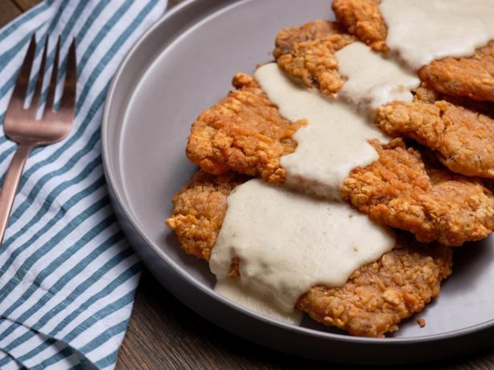
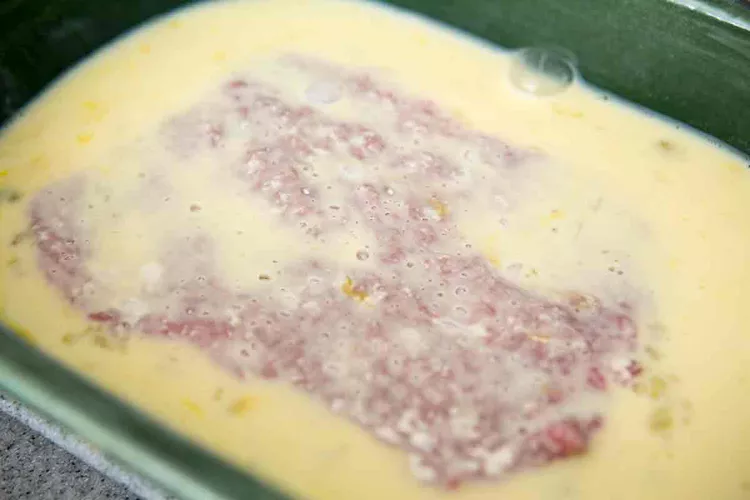
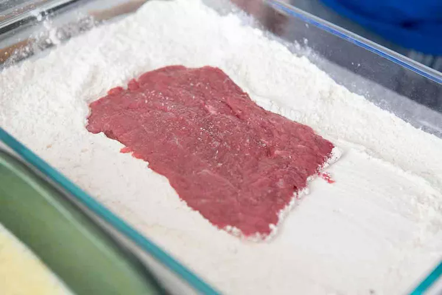
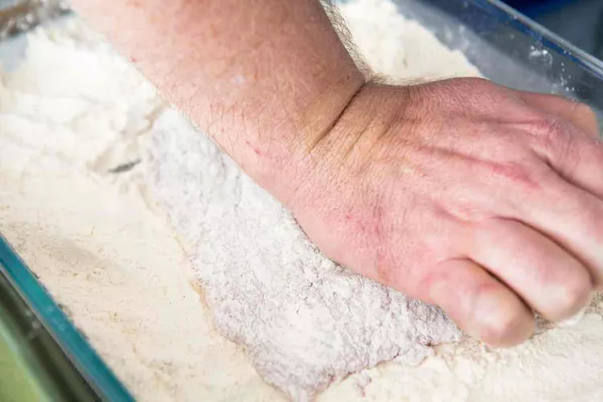
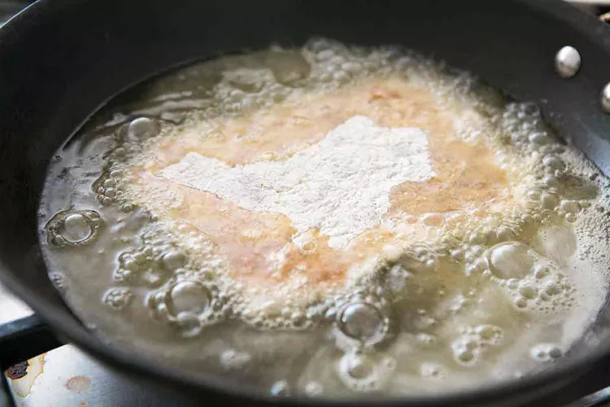
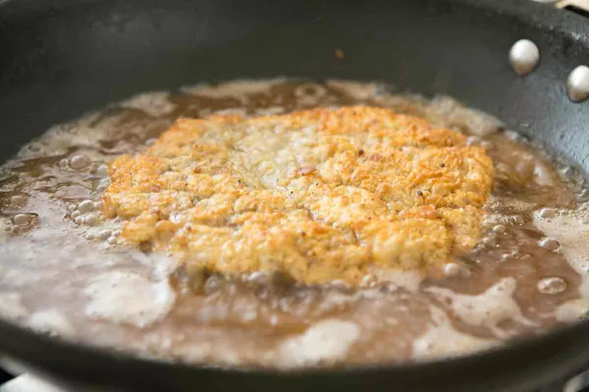

Paul's Country Fried Steak®

Paul's Country Fried Steak® (pictured above) is a twist on the famous dish while keeping it a classic comfort food
Ingredients
- Thin cut New York strip Steak
- Eggs
- Flour
- Panko Bread Crumbs
Steps
NOTE: Have your flour, eggs, and bread crumbs ready in bowls and steak seasoned to your preference
- Dip your New York Strip Steak in the bowl of eggs and make sure steak is covered generously

- After a applying a good coat it's time to dip the steak in the flour, make sure the steak is completely convered


- After applying flour, dip the flour covered steak in the eggs once again until completely covered
- Now that you have a good coat of egg its time to dip the steak in the bread crumbs, make sure to cover completely
- Once you have your steak properly covered it's time to cook, pour enough oil in a frying pan to cover the bottom by 1/4 inch
- Heat up oil to 350°F or when oil sizzles when you drop a little flour in it
- Place steak in the oil and cook each side for 2 minutes or until golden brown


- Let steak cool for 2 minutes Steak will be HOT!
- Now that you've let it cool -You're ready to enjoy!!